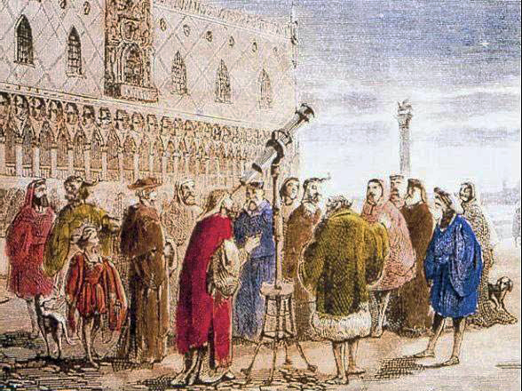
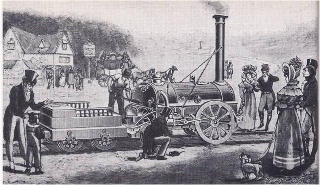

| Scientific Revolution | Age of Enlightenment | Industrial Revolution |
|---|---|---|
| 1500-1680 | 1680-1760 | 1760-1850 |
|  Following the European colonisation of the Americas, theearlier Renaissance, and invention of the printing press, a new era of unimaginable wealth in Europe led to a new thoughts. This was based on empirical evidence, less dependency on Christian theology and usage of pragmatic approaches for science. Empires like the Ottomans and Mughals both rose in the earlier portion of the period, possessing some of the highest portions of the world's economy, while Europe slowly began dominating and stabilising. Ming China also had strong imperial rule resulting in cultural brilliance. New perspectives on science led to figures such as Galileo Galilei and Isaac Newton discovering vital knowledge that would go on to influence present day society. |
.jpg) Using the foundational philosophies of the scientific revolution,
Using the foundational philosophies of the scientific revolution, the Age of Enlightenment led to tangible structural reforms. Politics, religion and human rights were re-interpreted and morality shifted throughout the Western world. Other civilisations began the use of more technologically advanced warfare such as the use of guns in this age, leading to the Qing expansion, Oyo Empire rise in West Africa, rebellions in the Americas, warfare in India and Persian expeditions. |
 Starting in Britain, with the earlier invention of theSteam Engine, a new technological era would go on to transform lives globally, shifting the world from agrarian and hand-crafted economies to using steam power and factories, leading to far more efficiency in manufacturing than was ever possible in the past. Due to European colonialism reaching Asia during this time, this technology spread rapidly. Urbanisation at unprecedented scales began due to mass migration from rural farms to major cities, eased by new far easier transportation such as trains. |